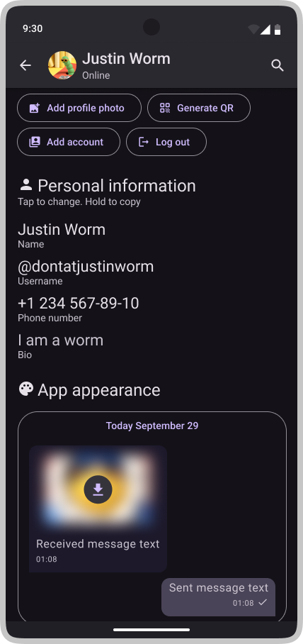
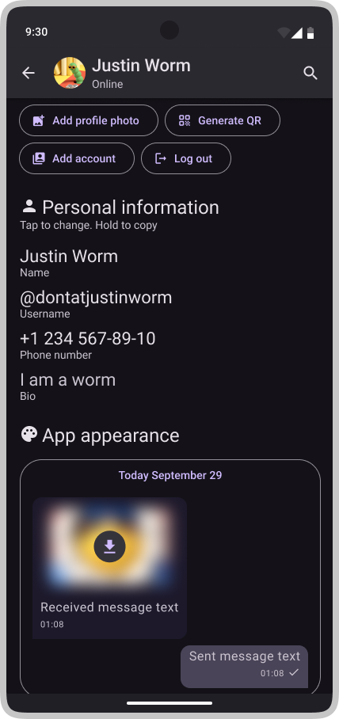
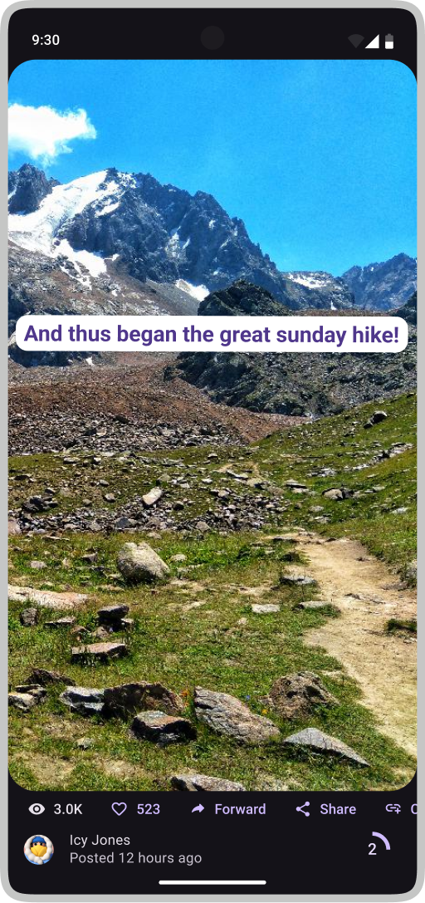
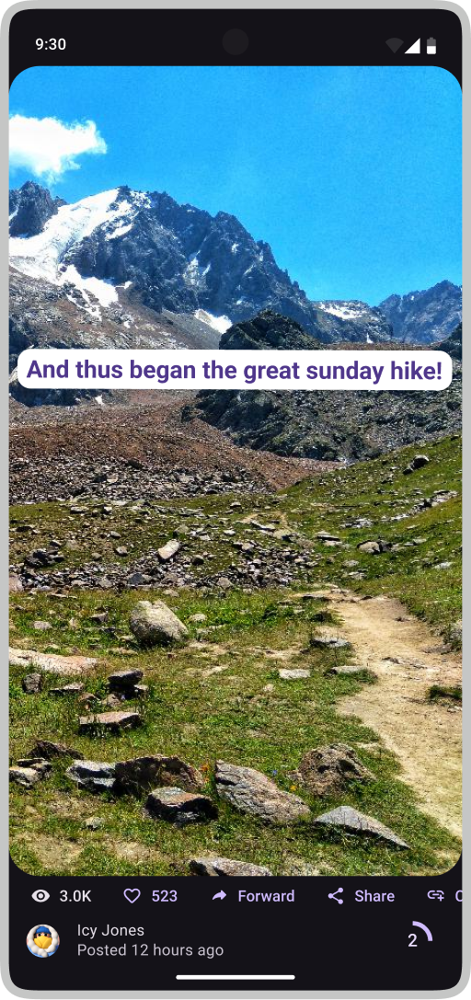

Redesigning Telegram's Android app


This is a concept redesign for Telegram's Android app. It was made in 48 hours, or so. The main goal was to update existing elements based on Material Design 3 guidelines, while maintaining app's core essence and lightweight feel. Along the way, I made some icons and rewrote some interface text. Almost all interface elements are purposefuly based on Material Design 3 kit. However, due to Telegram's brain-wrinkling complexity and functionality, some elements had to be designed from scratch or from significantly modified system elements.
To be clear: This redesign is not affiliated with Telegram or endorsed by its creators.
Pressing FAB in the bottom navigation bar opens up a full-screen menu:


User profiles including channel and group info-pages were updated as well:

 

My fav screens from the bunch:
 

Redesigned Near you and Story interfaces
Here are some icons made for the project. Most are modified versions of Material icons, but some had to be made from scratch: